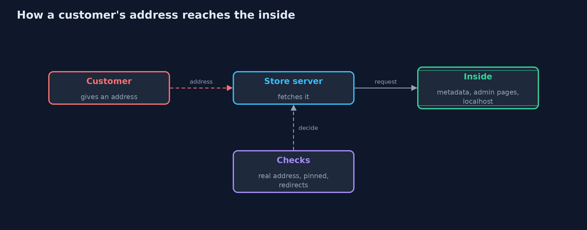
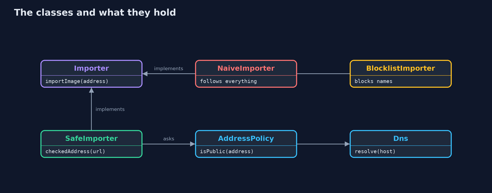
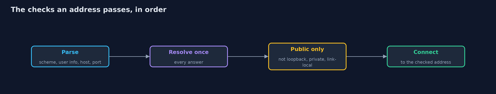
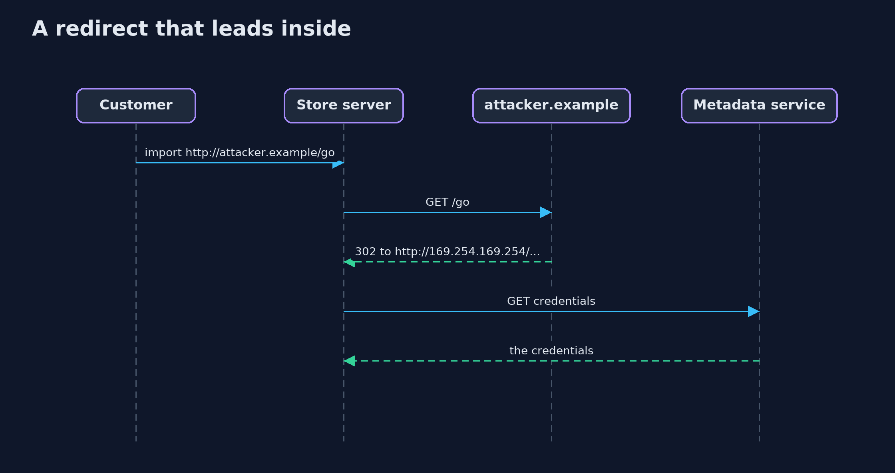

Server-Side Request Forgery (SSRF) and Its Defences
src/main/java/com/jk/explore/security/ssrf/
├── AddressPolicy.java Decides, from the real address and not from its spelling, whether a server may connect to it
├── BlocklistImporter.java The second version, a blocklist of host <em>names</em>: it checks the text of the address, not the address the connection really goes to
├── Dns.java A model of name resolution with fixed answers
├── ImportRefused.java The import was refused
├── Importer.java "Import a product image from a web address": the server fetches the address for the customer
├── NaiveImporter.java The first version: fetch whatever address the customer gives, and follow every redirect
├── Network.java The world the store's server can reach, as a table from address and path to a response
├── Response.java What a server answers: a status, a content type, a redirect target for 3xx, and a body
├── SafeImporter.java The fixed version
├── SsrfDemo.java Runs the product image import story in four numbered acts and prints exact, repeatable results
├── Unreachable.java No host with that name, or nothing listening at that address
└── Url.java A web address taken apart by hand, so each part can be checked: scheme, user info, host, port and path
A feature that makes the server fetch a customer's address lets the customer reach whatever the server can reach, so check the address the connection really uses, connect to the address you checked, and look again at every redirect.
"Import a product image from a web address" looks harmless: the customer pastes an address and the server fetches it. But the server sits inside the company network, where it can reach things no customer can: the cloud metadata service, the server's own admin pages, and the office network. The customer only has to give an address that points there. That is server-side request forgery (SSRF): the customer forges a request, and the trusted server sends it.
The defences, in the order this project shows them:
- Check the address, not the text. Resolve the host name and test the real address: loopback, link-local, private and shared ranges are refused, however the address is spelled (2852039166, 127.1, ::ffff:a9fe:a9fe).
- Connect to the address you checked. If the name is looked up again, an attacker's DNS server can answer differently the second time (DNS rebinding).
- Check every redirect, and every address a name resolves to.
- Narrow what is fetched: web schemes and ports only, no user info, images only, a size limit, and a generic error for the customer.
Maps to: OWASP Top 10 (2025) A01 Broken Access Control · CWE-918 · OWASP ASVS 5.0, the validation chapter (SSRF protection).
The idea in everyday terms
Think of a receptionist who will phone any number a visitor writes on a slip and read back what the other end says. The receptionist's desk phone can reach the director's private line and the vault, which the visitor's cannot. A blocklist of three numbers is a list of the ones somebody thought of; the fix is to look at where the call really goes, and to dial only the number that was checked.
The scenario
An online store lets sellers import a product image from a web address. The demo simulates the network the store's server can reach, with a public image host, an attacker's host, the cloud metadata address, the server itself and an internal admin page. All secrets are harmless markers, and nothing leaves the process.
Run
./gradlew run
The demo tells the story in 5 acts, each printing exact numbers that the tests check:
| Act | What it shows |
|---|---|
| 1. Importing an image | An honest address imports a cat picture. |
| 2. The server fetches whatever it is told | The same form reads the cloud credentials, the server's own settings and the internal admin page. |
| 3. A blocklist of names is easy to walk around | A blocklist stops the metadata address as written and nothing else: decimal, short, mapped IPv6, a name that points inside, and a redirect all get through. |
| 4. Check the address the connection really uses | Resolving once and testing every address refuses all nine attacks, while honest imports and the attacker's own public image still work. |
| 5. Why checking and then connecting is not enough | An importer that checks the name and then looks it up again is fooled: it checked a public address and fetched the internal admin panel. |
Test
./gradlew test
12 tests in DemoRunsTest, SsrfTest. Everything is fixed data, so the demo prints the same text on every run.
What the simulation got right, and what it left out
The network is a table of addresses, paths and responses, and DNS is a table of names, so every run is the same and nothing is ever sent. Literal addresses are parsed
by the JDK's own rules, the same rules that make 2852039166 and 127.1 valid addresses to a real connection. A rebinding name answers differently the second time.
Technologies and versions
Every version below is pinned in the project's build files and was the latest stable release when the project was built.
| Technology | Version | Used for |
|---|---|---|
| Java | 25 | the language and runtime; a Gradle toolchain finds or downloads the JDK |
| Gradle | 9.8.1 (wrapper) | build and run; nothing to install, the wrapper downloads it |
| org.junit.jupiter:junit-jupiter | 6.1.3, set by junit-bom | JUnit 5: the tests (tests only) |
| org.junit.platform:junit-platform-launcher | 6.1.3, set by junit-bom | JUnit platform launcher, which Gradle needs to run the tests (tests only) |
Learning Material
| Document | What it is for |
|---|---|
| Problem statement | the situation and what the project must show |
| Prerequisites | what you need to know first |
| Server-Side Request Forgery (SSRF) and Its Defences, explained | the acts in prose |
| Session guide | a one-hour lesson with exercises |
| Animated walkthrough | the acts step by step |
| Threat model | what is protected, who could harm it, and how, using STRIDE |
| Spec | what this project must be true of |
| Expected output | the golden demo output every test and every port checks against |
The idea in one picture
The customer never connects to the inside; the server does.

Where each piece sits
Three importers share one interface; only the safe one uses AddressPolicy.

How the data moves
Every redirect goes through the same checks again.

Who calls whom, in order

What it costs
- Allow-lists beat block-lists, and need upkeep. If images come from a few known hosts, name them. A general URL import cannot, so it must check addresses.
- Some customers use private addresses on purpose. A company that hosts images on its intranet is refused, which is the right default.
- Resolving yourself is more work. The code must connect to the address it checked, which many HTTP clients do not allow without a custom resolver.
- Egress rules still matter. Address checks in code can have gaps; a network rule that stops the fetch service from reaching internal ranges is a second layer.
- Metadata services need their own hardening, such as requiring a session token header, so that one forged GET is not enough.
When this is too much
If the feature can take a file upload instead of an address, take the upload: there is no request to forge. Do not build a clever parser of addresses; the address after resolution is the only fact that matters.
Where you have already met this
- Webhook URLs, avatar imports, link previews, PDF renderers and "fetch this feed" features.
- The cloud metadata address 169.254.169.254 in every list of SSRF payloads.
- A breach report that begins with a server that fetched a URL for a user.
- A finding titled "Server-Side Request Forgery" with CWE-918.
Where this sits
This project is in web-security and builds on cross-site-request-forgery, which turned a browser into the forger. Here the forger is the server.